Please get me a per-channel spend rollup out of the ad log in my marketing folder: a Python script beside the log that writes a CSV of channel, total spend rounded to cents and impressions, biggest spender first, ties broken by channel name A-Z, and run it so the CSV is there.
{
"config": [
{
"type": "execute",
"parameters": {
"command": "python3 -c \"import csv,os;d='/home/user/marketing';os.makedirs(d,exist_ok=True);rows=[['date','channel','spend','impressions'],['2025-09-01','search','420.55','18200'],['2025-09-01','display','118.40','52000'],['2025-09-02','search','389.10','16750'],['2025-09-02','social','512.25','61200'],['2025-09-03','display','142.15','48900'],['2025-09-03','email','64.00','9100'],['2025-09-04','social','477.80','58400'],['2025-09-04','search','401.35','17600'],['2025-09-05','email','71.50','9800'],['2025-09-05','display','131.05','44300'],['2025-09-06','social','433.90','55100'],['2025-09-06','search','362.70','15200'],['2025-09-07','email','58.25','8400'],['2025-09-07','display','127.60','46150'],['2025-09-08','social','390.05','50700'],['2025-09-08','search','344.20','14900']];csv.writer(open(os.path.join(d,'ad_log.csv'),'w',newline='')).writerows(rows)\"",
"shell": true
}
}
],
"evaluator": {
"func": "check_include_exclude",
"result": {
"type": "vm_command_line",
"command": [
"python3",
"-c",
"import sys, traceback\ndef _main():\n import csv, glob, os, sys\n base = '/home/user/marketing'\n scripts = [p for p in glob.glob(base + '/*.py')]\n if not scripts:\n print('no .py script in ' + base, file=sys.stderr)\n print('FAIL')\n raise SystemExit\n expect = [('social', 2214.00, 225400), ('search', 1917.90, 82650), ('display', 519.20, 191350), ('email', 193.75, 27300)]\n problem = 'no CSV matched the required rollup'\n for p in glob.glob(base + '/*.csv'):\n if os.path.basename(p) == 'ad_log.csv':\n continue\n rows = [r for r in csv.reader(open(p, encoding='utf-8')) if any(c.strip() for c in r)]\n if not rows:\n continue\n if rows and not rows[0][1].replace('.', '', 1).replace('-', '', 1).isdigit():\n rows = rows[1:]\n if len(rows) != 4:\n problem = os.path.basename(p) + ': %d data rows, expected 4' % len(rows)\n continue\n ok = True\n for got, (ch, sp, imp) in zip(rows, expect):\n try:\n if got[0].strip().lower() != ch or abs(float(got[1]) - sp) > 0.011 or int(float(got[2])) != imp:\n ok = False\n problem = os.path.basename(p) + ': row mismatch ' + str(got) + ' vs ' + str((ch, sp, imp))\n break\n except (ValueError, IndexError):\n ok = False\n problem = os.path.basename(p) + ': unparsable row ' + str(got)\n break\n if ok:\n problem = None\n break\n if problem:\n print(problem, file=sys.stderr)\n print('PASS' if not problem else 'FAIL')\n\ntry:\n _main()\nexcept Exception:\n traceback.print_exc(file=sys.stderr)\n print(\"FAIL\")\n"
]
},
"expected": {
"type": "rule",
"rules": {
"include": [
"PASS"
],
"exclude": [
"FAIL"
]
}
}
}
}
step 1 05:04:57
THINKINGI need to find the ad log in the marketing folder first. Let me open the file manager or a terminal to explore. A terminal will be most efficient. Let me take a screenshot first to see the current state, then open a terminal.
Actually, I already see the desktop. Let me open a terminal application to explore the file system. I'll look for a terminal in the applications or use the Files app. Let me open a terminal via the Files app or check if there's a terminal. I'll use the Activities/apps grid.
Let me start by opening a terminal. I'll click the app grid (bottom left).
ACTIONI'll start by exploring the file system to locate the ad log in the marketing folder. Let me open a terminal.
EXECUTED (pyautogui in VM)pyautogui.press("return")
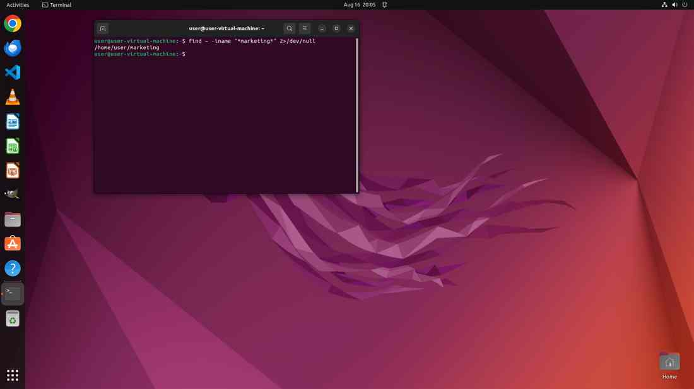
step 6 05:05:38
THINKINGThe marketing folder is at /home/user/marketing. Let me list its contents to find the ad log.
ACTIONFound the marketing folder at `/home/user/marketing`. Let me list its contents to find the ad log.
TOOL CALL<tool_call>
<function=computer_use>
<parameter=action>
type
</parameter>
<parameter=text>
ls -la /home/user/marketing
</parameter>
</function>
</tool_call>
EXECUTED (pyautogui in VM)pyautogui.typewrite("ls -la /home/user/marketing")
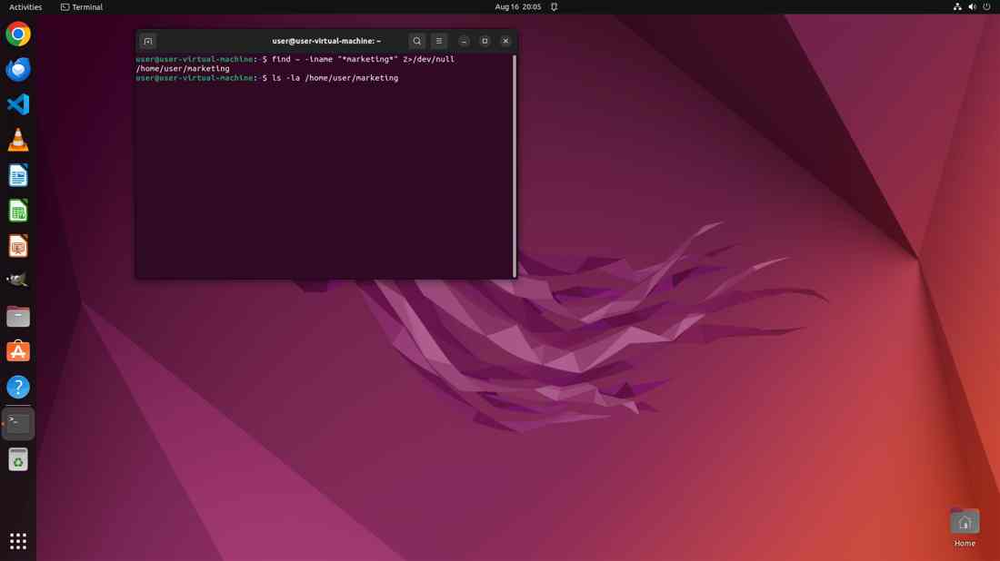
step 7 05:05:47
THINKINGThe Enter may not have registered since I typed with a trailing newline in the type text but it seems the command hasn't executed (no output yet). Actually the type included a newline so it should have run. But the screen shows the command with no output and a new prompt isn't there. Let me press Enter again.
EXECUTED (pyautogui in VM)pyautogui.press("return")
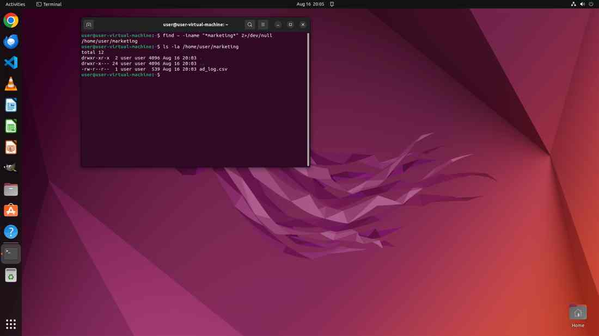
step 8 05:05:56
THINKINGThe ad log is `ad_log.csv`. Let me view its contents to understand the structure (columns, delimiters, formats) before writing the Python script.
ACTIONThe ad log is `ad_log.csv`. Let me examine its contents to understand its structure before writing the script.
EXECUTED (pyautogui in VM)pyautogui.press("return")
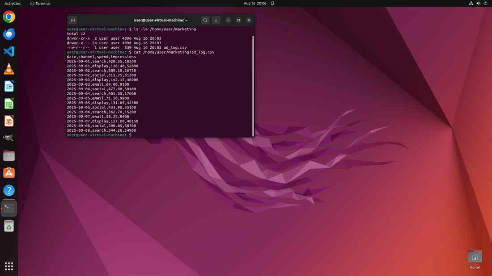
step 10.1 05:06:27
THINKINGNow I can see the CSV structure:
Header: date,channel,spend,impressions
Data rows with channels: search, display, social, email. Spend values have decimals, impressions are integers.
Let me verify the data by summing mentally or just let the script do it. The columns I need: channel, total spend (rounded to cents), impressions. Sort by total spend descending, ties by channel name A-Z.
Channels present: search, display, social, email.
Let me compute totals to verify later:
search: 420.55 + 389.10 + 401.35 + 362.70 + 344.20 = 1917.90
display: 118.40 + 142.15 + 131.05 + 127.60 = 519.20
social: 512.25 + 477.80 + 433.90 + 390.05 = 1814.00
email: 64.00 + 71.50 + 58.25 = 193.75
impressions:
search: 18200+16750+17600+15200+14900 = 82650
display: 52000+48900+44300+46150 = 191350
social: 61200+58400+55100+50700 = 225400
email: 9100+9800+8400 = 27300
Order by spend desc: search(1917.90), social(1814.00), display(519.20), email(193.75).
Now I'll write a Python script beside the log. I'll create it using a heredoc in the terminal, then run it. Using the csv module and rounding to cents. I'll use round(total, 2) for spend. To be safe with float rounding, I can round and format to 2 decimals. I'll write spend as round(value,2).
Let me create the script. I'll name it channel_rollup.py. Output CSV channel_rollup.csv. I'll write it using cat heredoc.
ACTIONI can see the structure: `date,channel,spend,impressions` with channels search, display, social, email. Now I'll write a Python script beside the log using a heredoc.
TOOL CALL<tool_call>
<function=computer_use>
<parameter=action>
type
</parameter>
<parameter=text>
cat > /home/user/marketing/channel_rollup.py << 'EOF'
import csv
from collections import defaultdict
LOG = "/home/user/marketing/ad_log.csv"
OUT = "/home/user/marketing/channel_rollup.csv"
spend = defaultdict(float)
impressions = defaultdict(int)
with open(LOG, newline="") as f:
reader = csv.DictReader(f)
for row in reader:
ch = row["channel"].strip()
if not ch:
continue
spend[ch] += float(row["spend"])
impressions[ch] += int(row["impressions"])
rows = [
(ch, round(spend[ch], 2), impressions[ch])
for ch in spend
]
rows.sort(key=lambda r: (-r[1], r[0]))
with open(OUT, "w", newline="") as f:
writer = csv.writer(f)
writer.writerow(["channel", "total_spend", "impressions"])
for ch, s, imp in rows:
writer.writerow([ch, f"{s:.2f}", imp])
print("Wrote", OUT)
EOF
</parameter>
</function>
</tool_call>
EXECUTED (pyautogui in VM)pyautogui.typewrite("cat > /home/user/marketing/channel_rollup.py << 'EOF'")
step 10.2 05:06:31
same model call as the previous action
EXECUTED (pyautogui in VM)pyautogui.press("enter")
step 10.3 05:06:35
same model call as the previous action
EXECUTED (pyautogui in VM)pyautogui.typewrite("import csv")
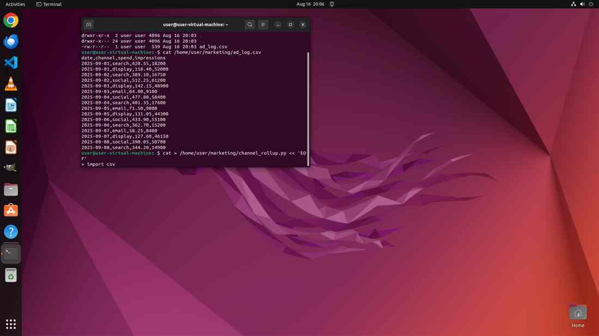
step 10.4 05:06:39
same model call as the previous action
EXECUTED (pyautogui in VM)pyautogui.press("enter")
step 10.5 05:06:43
same model call as the previous action
EXECUTED (pyautogui in VM)pyautogui.typewrite("from collections import defaultdict")
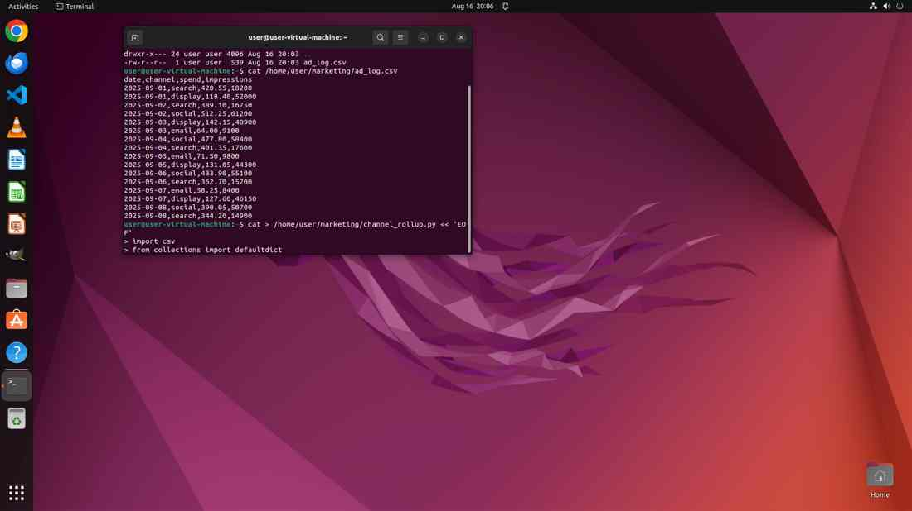
step 10.6 05:06:48
same model call as the previous action
EXECUTED (pyautogui in VM)pyautogui.press("enter")
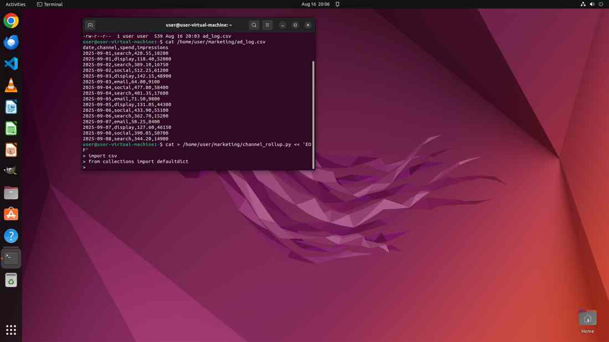
step 10.7 05:06:52
same model call as the previous action
EXECUTED (pyautogui in VM)pyautogui.press("enter")
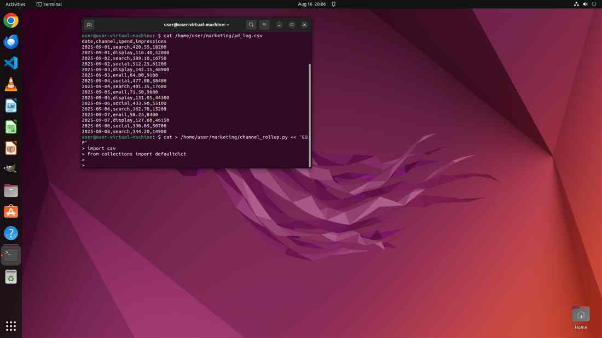
step 10.8 05:06:56
same model call as the previous action
EXECUTED (pyautogui in VM)pyautogui.typewrite("LOG = \"/home/user/marketing/ad_log.csv\"")
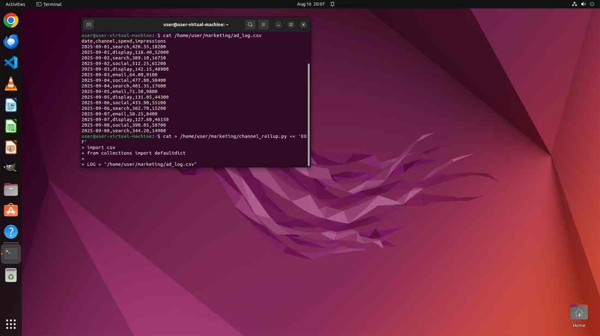
step 10.9 05:07:00
same model call as the previous action
EXECUTED (pyautogui in VM)pyautogui.press("enter")
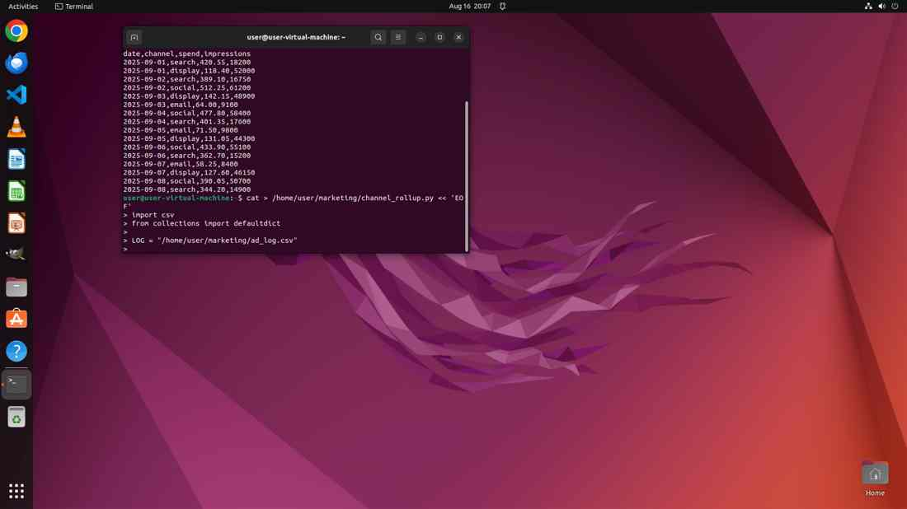
step 10.10 05:07:05
same model call as the previous action
EXECUTED (pyautogui in VM)pyautogui.typewrite("OUT = \"/home/user/marketing/channel_rollup.csv\"")
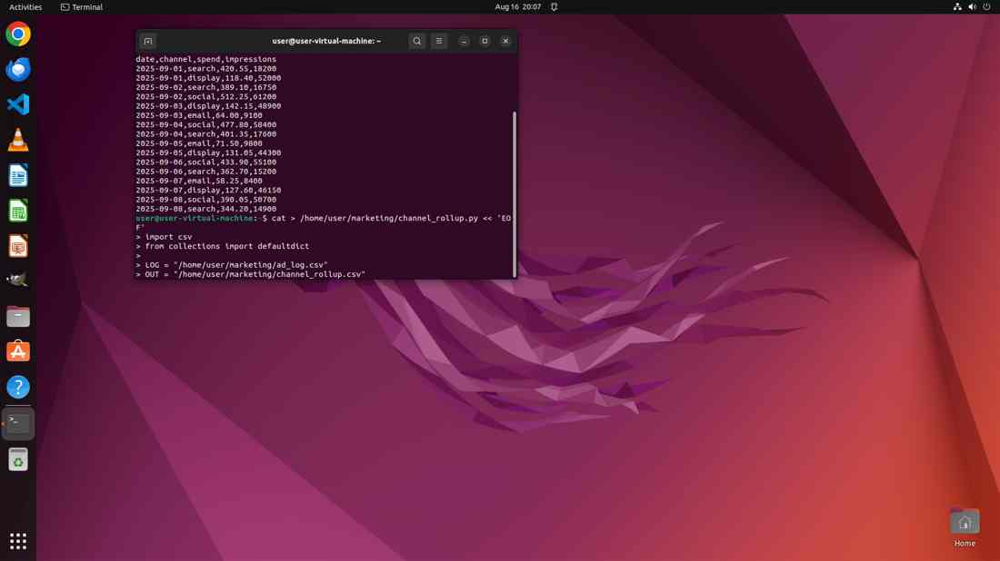
step 10.11 05:07:09
same model call as the previous action
EXECUTED (pyautogui in VM)pyautogui.press("enter")
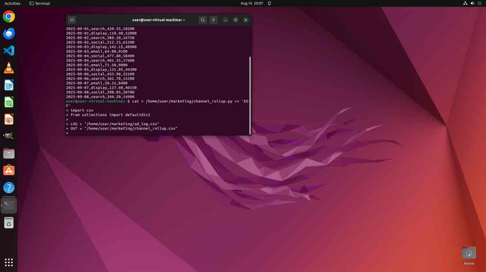
step 10.12 05:07:14
same model call as the previous action
EXECUTED (pyautogui in VM)pyautogui.press("enter")
step 10.13 05:07:18
same model call as the previous action
EXECUTED (pyautogui in VM)pyautogui.typewrite("spend = defaultdict(float)")
step 10.14 05:07:22
same model call as the previous action
EXECUTED (pyautogui in VM)pyautogui.press("enter")
step 10.15 05:07:26
same model call as the previous action
EXECUTED (pyautogui in VM)pyautogui.typewrite("impressions = defaultdict(int)")
step 10.16 05:07:30
same model call as the previous action
EXECUTED (pyautogui in VM)pyautogui.press("enter")
step 10.17 05:07:35
same model call as the previous action
EXECUTED (pyautogui in VM)pyautogui.press("enter")
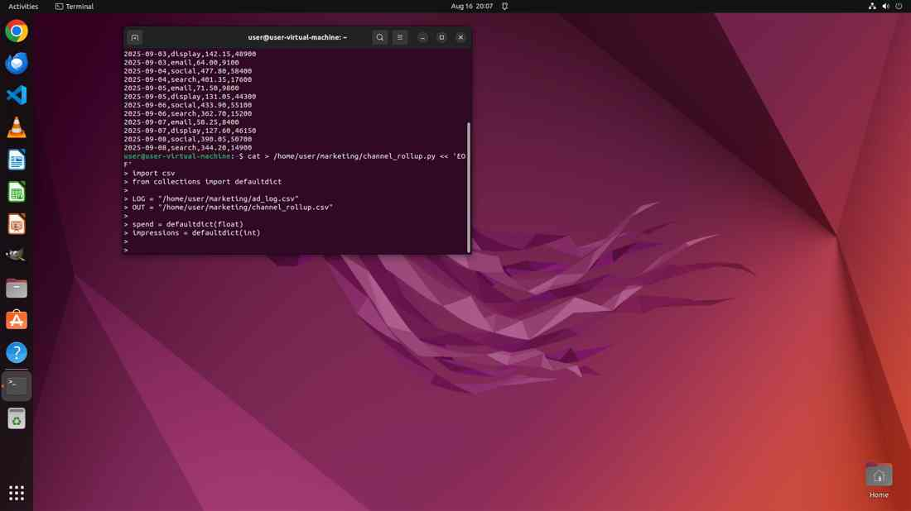
step 10.18 05:07:40
same model call as the previous action
EXECUTED (pyautogui in VM)pyautogui.typewrite("with open(LOG, newline=\"\") as f:")
step 10.19 05:07:44
same model call as the previous action
EXECUTED (pyautogui in VM)pyautogui.press("enter")
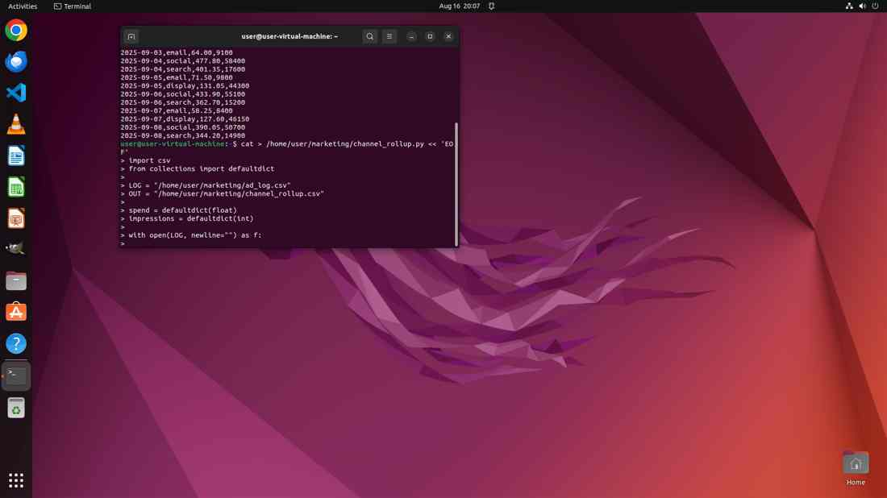
step 10.20 05:07:49
same model call as the previous action
EXECUTED (pyautogui in VM)pyautogui.typewrite(" reader = csv.DictReader(f)")
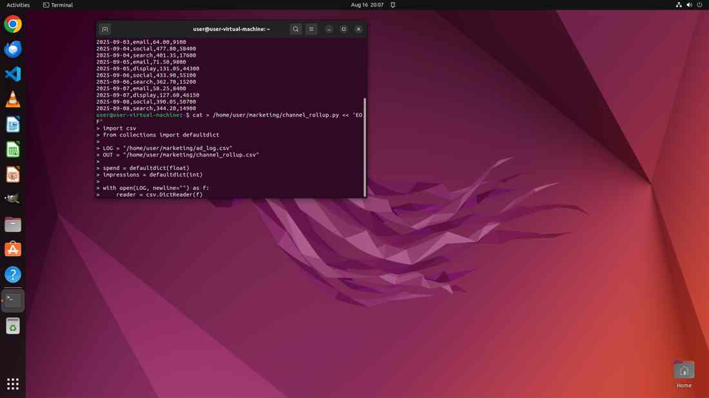
step 10.21 05:07:53
same model call as the previous action
EXECUTED (pyautogui in VM)pyautogui.press("enter")
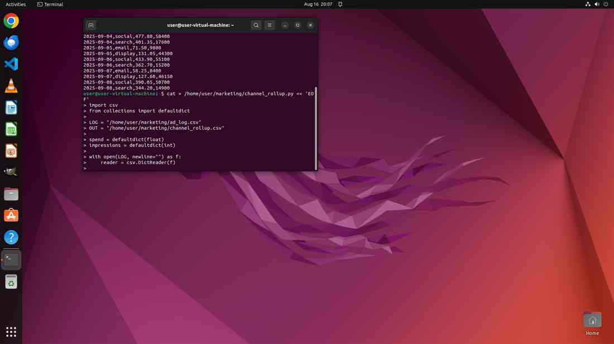
step 10.22 05:07:57
same model call as the previous action
EXECUTED (pyautogui in VM)pyautogui.typewrite(" for row in reader:")
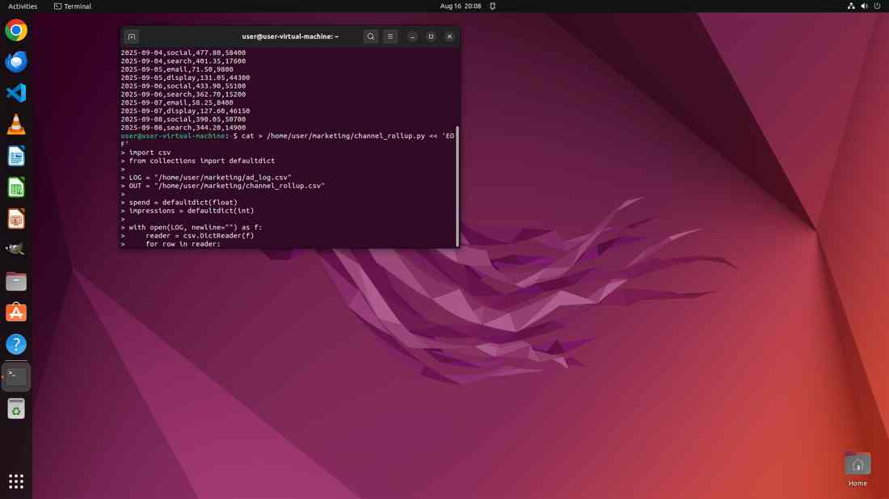
step 10.23 05:08:02
same model call as the previous action
EXECUTED (pyautogui in VM)pyautogui.press("enter")
step 10.24 05:08:06
same model call as the previous action
EXECUTED (pyautogui in VM)pyautogui.typewrite(" ch = row[\"channel\"].strip()")
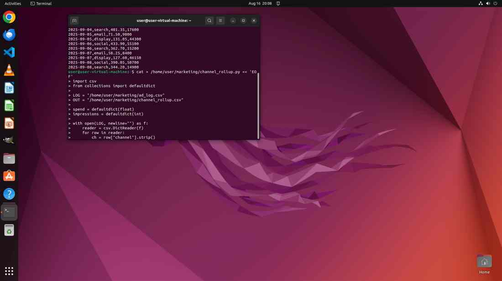
step 10.25 05:08:10
same model call as the previous action
EXECUTED (pyautogui in VM)pyautogui.press("enter")
step 10.26 05:08:14
same model call as the previous action
EXECUTED (pyautogui in VM)pyautogui.typewrite(" if not ch:")
step 10.27 05:08:31
same model call as the previous action
EXECUTED (pyautogui in VM)pyautogui.press("enter")
step 10.28 05:08:35
same model call as the previous action
EXECUTED (pyautogui in VM)pyautogui.typewrite(" continue")
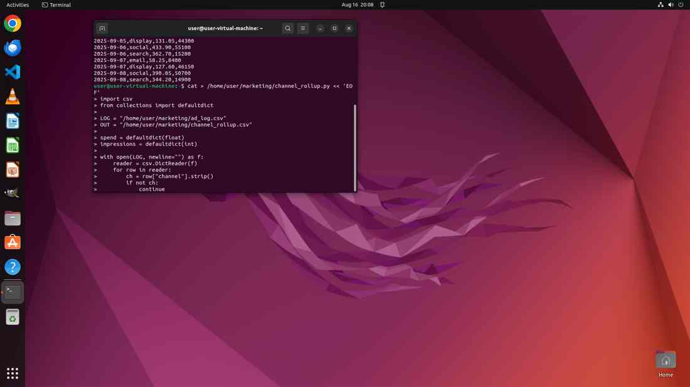
step 10.29 05:08:40
same model call as the previous action
EXECUTED (pyautogui in VM)pyautogui.press("enter")
step 10.30 05:08:44
same model call as the previous action
EXECUTED (pyautogui in VM)pyautogui.typewrite(" spend[ch] += float(row[\"spend\"])")
step 10.31 05:08:48
same model call as the previous action
EXECUTED (pyautogui in VM)pyautogui.press("enter")
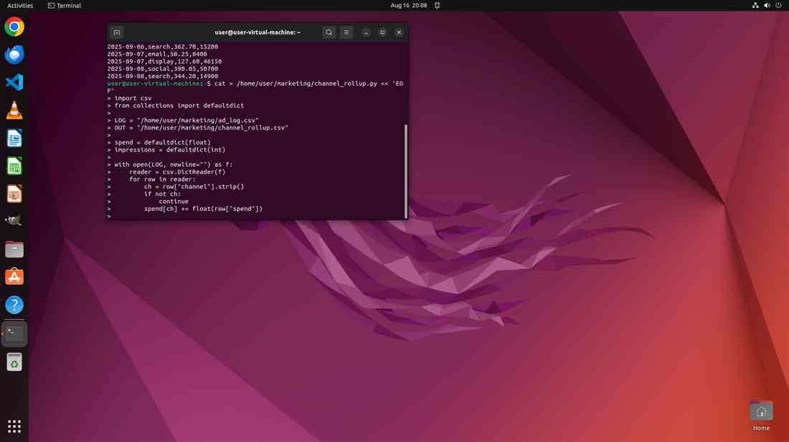
step 10.32 05:08:52
same model call as the previous action
EXECUTED (pyautogui in VM)pyautogui.typewrite(" impressions[ch] += int(row[\"impressions\"])")
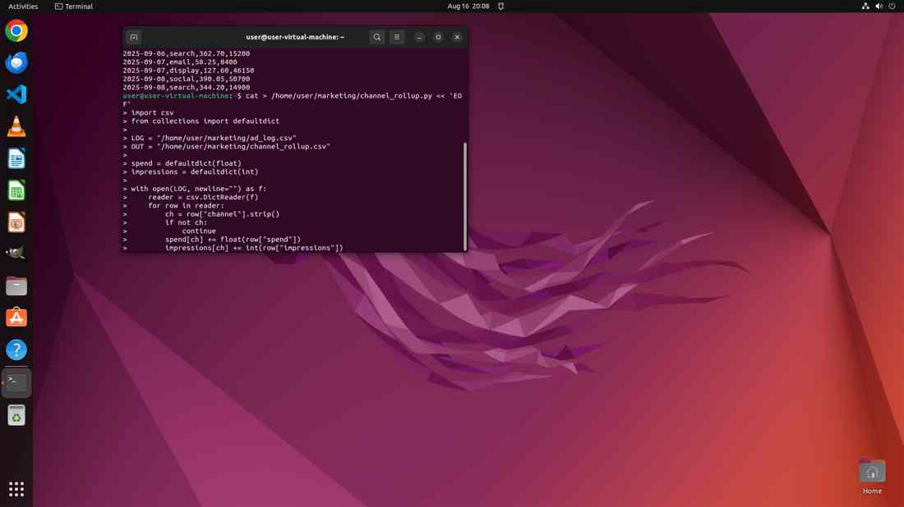
step 10.33 05:08:57
same model call as the previous action
EXECUTED (pyautogui in VM)pyautogui.press("enter")
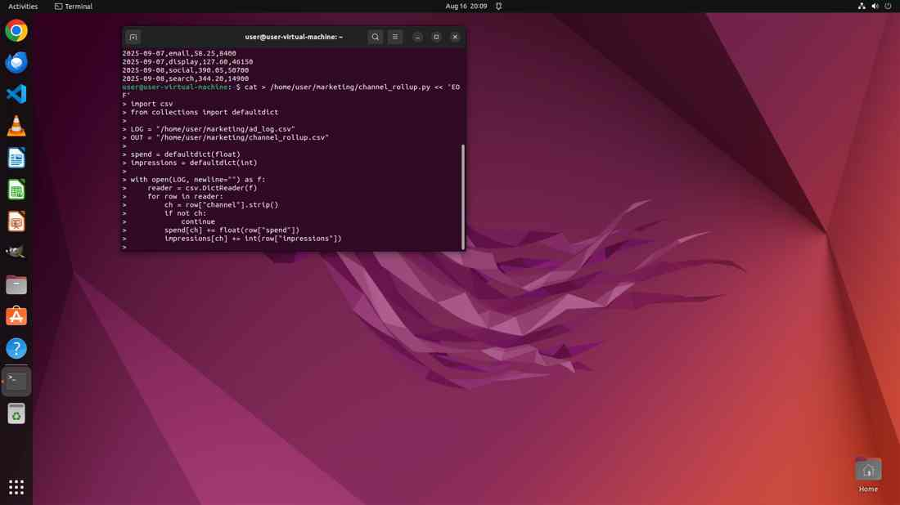
step 10.34 05:09:01
same model call as the previous action
EXECUTED (pyautogui in VM)pyautogui.press("enter")
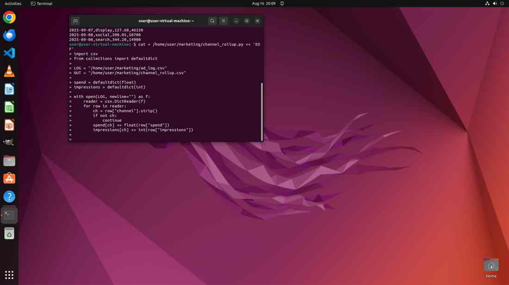
step 10.35 05:09:06
same model call as the previous action
EXECUTED (pyautogui in VM)pyautogui.typewrite("rows = [")
step 10.36 05:09:10
same model call as the previous action
EXECUTED (pyautogui in VM)pyautogui.press("enter")
step 10.37 05:09:14
same model call as the previous action
EXECUTED (pyautogui in VM)pyautogui.typewrite(" (ch, round(spend[ch], 2), impressions[ch])")
step 10.38 05:09:18
same model call as the previous action
EXECUTED (pyautogui in VM)pyautogui.press("enter")